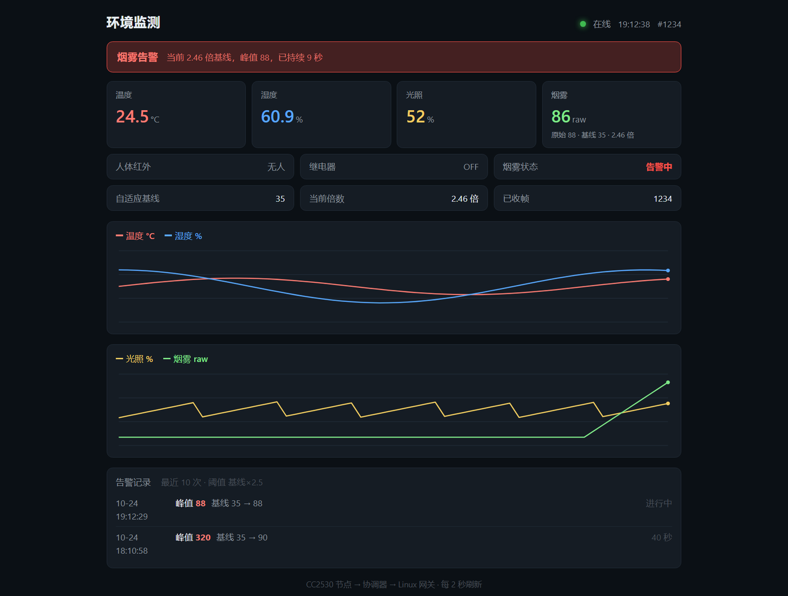

告警功能听起来最简单：设个阈值，超了就报。我一开始也是这么以为的。
然后看了一眼 MQ-2 的实际读数就卡住了——这个数字没有任何绝对意义。 同一个传感器，今天基线是 35，装到别人板子上可能是 60； 夏天潮的时候偏高，冬天干的时候偏低；用一年之后气敏层老化，还会整体漂移。
所以 if (gas > 600) alarm() 这种写法，在这个项目里从第一天起就是错的。
它不是「有时不准」，而是「一定不准，只是不知道什么时候被发现」。
一、把问题定义清楚
告警要回答的其实不是「读数是多少」，而是「现在比平时异常了多少」。 这个问题有四个子问题，每个都有独立的坑：
| 子问题 | 现象 | 对策 |
|---|---|---|
| 单帧尖峰 | 偶发一个孤立高点，一报警又立刻消失 | 中值滤波 |
| 基线漂移 | 同一段代码，换季节、换器件就不准 | 自适应基线 |
| 阈值附近震荡 | 读数在阈值上下抖动，反复报/撤 | 迟滞 + 连续确认 |
| 真异常被当成新常态 | 烟持续十分钟，基线自己爬上去，告警自消 | 告警期间冻结基线 |
最后一行的形势最险：告警自己把自己关掉了。这正是后面那个「自锁」陷阱的另一面。
二、中值滤波：只用五帧
五个样本的滑动窗口，每次取中间值。理由很简单： 一个孤立的尖峰，在五个数里永远排不到中间，除非它连出三帧以上。
窗口内 5 个数排序后取 [2]： [35, 35, 900, 36, 35] → 排序 [35,35,35,36,900] → 取 35 /* 尖峰被吃 */ [35, 900, 900, 900, 36] → 排序 [35,36,900,900,900] → 取 900 /* 真烟雾透传 */
窗口大小选 5 而不是 3 或 7：3 帧挡不住两帧连跳，7 帧延迟太大（7 秒才出结果）。 5 帧是「挡得住干扰」和「反应够快」的折中。
细节：窗口没填满时不能返回 0。
上电头 4 秒里窗口只有 1~4 个数，如果直接取 buf[2] 就是 0，
中值会从 0 突然跳到正常值——这在告警逻辑里会被判成「从 0 剧烈上涨」，可能误报。
所以窗口没满时，只对已填入的部分排序取中。
排序用插入排序，不用 qsort：n ≤ 5 时插入排序最多比较 10 次，
而 qsort 的函数调用开销比这整个排序还大。小数据量别迷信标准库。
三、自适应基线：一个整数除法的死区
基线用慢速指数移动平均，时间常数 τ = 600 秒（十分钟）。 也就是基线会慢慢跟上环境变化，但不会跟着一次烟雾事件跑掉。
教科书写法是：
base += (gas - base) / tau;
这个写法在这里是坏的。因为 base 和 gas 都是整数。
当 |gas - base| < tau 时，整数除法结果是 0，base 一步都不动。
而 tau = 600，意味着差值小于 600 时基线永久冻结。
而 MQ-2 的正常波动全程都在 0~60 之间——基线永远停在初始值上，一次都不会更新。
base，每帧都执行 base += ...，
日志里也每次都打印——但它永远是同一个数。如果没打日志、也没写测试，这个 bug 会一直潜伏到「传感器老化、基线漂移」那天才爆发。 而那时你会以为是传感器坏了。
解法：把余数攒起来
核心思路是——差值先攒着，攒够 1 个 τ 再挪一格，把被整数除法截掉的部分保留下来：
static void baseline_update(gw_baseline_t *b, uint16_t gas, int freeze) { int32_t target, step; if (!b->valid) { /* 第一帧直接建基线 */ b->base_x100 = (int32_t)gas * 100; b->acc = 0; b->valid = 1; return; } if (freeze) { return; } /* 告警期间冻结 */ target = (int32_t)gas * 100; b->acc += target - b->base_x100; /* 差值进累加器，不再被截断 */ step = b->acc / (int32_t)b->tau; if (step != 0) { /* 攒够了才挪 */ b->base_x100 += step; b->acc -= step * (int32_t)b->tau; } }
base_x100 是「基线 × 100」，用定点数保留两位小数，
这样即使在整数主轴上挪不动一格，小数部分也在真实地变化。
改完之后：光滑环境下基线十分钟内缓慢跟上，一次 3 倍烟雾事件不会把基线抬走。 两个目标同时达成。
四、那个只要颠倒两行顺序就永远不报警的陷阱
这是这篇最想讲的部分。
有了中值滤波和自适应基线，判定逻辑看起来就是「比值超过 N 倍就报警」。 代码写起来自然是：先更新基线，再拿新基线去判定。 顺序也很符合直觉——「先把状态刷新到位，再做判断」。
/* 错误顺序 */ gw_baseline_update(&base, med, 0); /* 先更新基线 */ rate = med * 100 / base_value; /* 再用新基线算倍数 */ if (rate >= 180) { alarm(); }
想想烟来的那一刻发生了什么：med 突然从 35 跳到 90。
基线更新一步就把自己往 90 拉了一点点——看起来影响不大。但问题是这个动作每帧都在做，
而阈值是「1.8 倍」。
真正致命的地方不在单帧，而在于基线的更新逻辑里没有「异常期间不动」的判断，
于是持续异常会把基线一路推高到异常值本身——
几十分钟后 gas / base 回到 1.0，告警自动解除。
而现场还在冒烟。
更隐蔽的是首帧：如果系统正好在烟雾中上电，
第一帧就直接成了基线，ratio 永远是 100%，永远不报警，而且一切正常。
你不会收到任何报错、任何异常日志、任何延迟。系统安静地、完美地工作着，只是永远不会响。 而它的价值，全部押在「会响」这一件事上。
正确的顺序
/* 正确顺序：用【旧】基线判，判完再更新 */ med = gw_medfilt_push(&ctx->med, e->gas); if (!gw_baseline_valid(&ctx->base)) gw_baseline_update(&ctx->base, med, 0); /* 首帧先建基线 */ ev = gw_alarm_feed(&ctx->alarm, med, &ctx->base, ts); /* ← 用旧基线判 */ gw_baseline_update(&ctx->base, med, ctx->alarm.state == ALARM_ST_ALARM); /* ← 判完再更新 */
两个要点：
- 判定必须用更新前的基线。否则基线被当前值污染，比值失去意义。
- 告警期间
freeze = 1。这是第二道保险： 即使顺序写对了，持续十分钟的烟雾也足以让基线在解除告警前爬上去。
这两行代码的相对顺序，决定了整个功能是「能用」还是「永远不响」。 而且它编译通过、没有警告、代码审查时看着也很合理。
五、状态机：为什么解除线必须低于触发线
三档状态：NORMAL（正常）、WARN（疑似）、ALARM（告警）。
| 参数 | 值 | 作用 |
|---|---|---|
| 触发倍数 | 180%（1.8 倍） | 超过进 WARN |
| 绝对涨幅 | ≥ 8 | 低基线时防量化噪声，与上一条同时满足 |
| 解除倍数 | 130%（1.3 倍） | 低于才可能解除 |
| 确认帧数 | 连续 3 帧 | WARN 持续 3 帧才升 ALARM |
| 解除帧数 | 连续 10 帧 | ALARM 需连续 10 帧低于解除线 |
触发 1.8 倍、解除 1.3 倍，中间这0.5 倍的区间是「死区」—— 读数掉回 1.5 倍时不会解除，也不会重新触发，状态保持不变。
这一步非常关键。如果触发和解除用同一个阈值，读数正好在阈值上下抖动时， 状态机会每秒切换一次：告警、解除、告警、解除…… 日志刷屏，数据库里写满一行行碎片记录， 而且真正该关心的「一次持续三分钟的烟雾」被切成了几十条。
为什么会抖动？因为滤波后的中值本身也有 ±1 的自然波动（MQ-2 静态时就在跳）。 任何单点阈值，只要信号有噪声，就必然在阈值附近反复穿越。 这是信号处理的基本结论，不是代码问题。
迟滞 + 连续确认，是两层独立的防线
迟滞管「幅度」——离阈值多远才算数。 连续确认管「时间」——要持续多久才算数。
触发侧 3 帧（3 秒）比解除侧 10 帧（10 秒）短，是有意的： 漏报的代价远大于误报。宁可多响一次让人去看一眼，不能少响一次。
六、告警记录：一次事件一行，不是一帧一行
数据库里存的是事件而不是采样，这一点很重要：
alarm(id, node, start_ts, end_ts, base_gas, trig_gas, peak_gas)
/* end_ts 为 NULL = 这次告警还在进行中 */
一次持续三分钟的烟雾，env_data 里有 180 行采样，
但 alarm 里只有一行。查「这个月报过几次警」变成一句
SELECT COUNT(*)，而不是对着 180 行采样做聚合。
一个必须处理的边界：上次是被 kill -9 杀的
如果进程在告警期间被 kill -9 或断电，end_ts 就永远停在 NULL。
下次启动，库里就躺着一行「进行中」的告警，而它其实早就结束了。
这种假记录比没有记录更糟：网页会一直显示「告警中」。
所以 gw_db_open() 里加了一句收尾：
UPDATE alarm SET end_ts = start_ts WHERE end_ts IS NULL;
把遗留的「进行中」记录就地封口。启动时做一致性修复，是这类系统的基本功——
正常退出会走 gw_db_alarm_end()，异常退出就靠这一句兜底。
七、日志长什么样
每帧一行，把四个关键数并排打出来，因为它们的比值才是判据，单看任何一个都没意义：
[18:11:22] #48 n1 24.5C 58.0% lux= 512( 50%) gas= 36 med= 35 base= 35 100% PIR=无人 RLY=OFF ↑原始 ↑滤波 ↑基线 ↑倍数
异常时行末追加标记，不用另起一行：
gas= 88 med= 87 base= 35 248% ... <<< 疑似
gas= 92 med= 91 base= 35 260% ... <<< 烟雾告警
---- [18:11:32] 烟雾告警解除，本次持续 9 秒，峰值 gas=92 ----
这样一眼能看出到底是「原始值跳了但中值没跳」（干扰）还是 「中值也跳了」（真实事件）。这两个数分开显示，是排干扰的第一手信息。

tools/sim_node.py --smoke 驱动网关渲染，
硬件未接入 —— 手头这块 MQ-2 的实测峰值只能到 1.9 倍，
想截一张「倍数冲到 2.4 倍」的真实画面得喷很久，不如用模拟器把界面行为验完整。
total_sec 是跨多次告警累加的。
于是第一条告警明明持续 9 秒，日志写着「持续 34 秒」。
后来单独加了 last_sec 存本次时长。
「累计值」和「本次值」要从一开始就分开命名。
八、怎么验
两条路，先软后硬：
-
模拟器。给 Python 模拟节点加了
--smoke参数： 每 60 秒自动跑一轮（8 秒爬升到 3.5 倍 → 12 秒回落）， 外加一个 39 倍的孤立尖峰，专门验中值滤波确实吃掉了尖峰。 - 真硬件。打火机只按出气不打火，对着 MQ-2 网罩喷 2 秒。 这个操作安全、无明火、气体是丁烷，MQ-2 对它响应很明显。
上真机之前，先看基线：记下平稳状态下的 base= 是多少。
这个数直接决定阈值该定多少 —— 下一节就是第一次上真机踩到的坑。
触发线从 2.5 倍降到 1.8 倍：第一次上真机，一次都没报
参数最初按「2.5 倍」定，理由很朴素：留足余量、少误报。 第一次上真机，打火机只出气不打火、对着网罩喷 3 秒，日志是这样的：
gas= 29 med= 29 base= 15 193%
洁净空气基线 15，峰值 29，只有 193%。 距离 250%（需要 38）差 57 个百分点 —— 一次都不会报警。
这就是最麻烦的地方：「永远不报警」和「一切正常」在日志上长得一模一样。 设备在正常出数、网页正常画曲线、坏帧统计是 0，看上去一切健康， 只有保护功能从来没生效过。不主动拿气体去试，这个缺陷可以一直藏着。
所以把触发线改成 180%：15 × 1.8 = 27，实测峰值 29 能过线，余量约 20%。 解除线跟着压到 130%，死区维持 0.5 倍宽度。
同时补了一道绝对增量门槛 ALARM_MIN_DELTA = 8：
涨幅必须实打实到 8 才算了越线。
因为基线只有 15 时，1 个 ADC LSB 就是一个 6.7% ——
噪声从 15 抖到 19 就是 127%，光看百分比会被量化噪声点着。两道门同时过才算。
DELTA 只有在
base + 8 > base × 1.8 时才是真正的约束 ——
解得 base < 10。
基线 15 的板子上，卡住你的是 180% 那一条，
DELTA 只是兜底，用来防「传感器快坏了、基线漂到个位数」的情况。
想让它在 base=15 也参与判定，得提到 13 以上，但那样实测峰值 29 只剩 1 的余量，太紧。
另外，基线 15 本身就是个信号：正常 MQ-2 在洁净空气里、 10 kΩ 负载下 ADC 一般落在 100~400。15 偏低，可能是预热不够 （每次上电要 20 秒以上，首次使用还要连续老化 24~48 小时）， 也可能是这块板的分压设计如此。换传感器之后必须重新测基线再改参数。
九、这轮最值得记住的
- 没有绝对值的东西，就不要用绝对阈值。 MQ-2 的读数受温度、湿度、老化影响，唯一稳定的量是「相对基线的倍数」。
-
整数除法会制造死区。
x += (target - x) / N在差值小于 N 时恒为 0。 要平滑就攒余数，或者改用定点数。 - 判定和状态更新之间，顺序有语义。 「先刷新再判断」看着合理，实际会让判据被当前值污染，最坏结果是永远不报警。
- 默认参数必须由实测决定，而且要在真机上验。 2.5 倍在纸上很合理，放到这块模块上一次都触发不了。 「能编译、能跑、没报错」和「功能真的生效」完全是两件事。
- 告警系统最严重的故障是沉默。 「永远不响」和「一切正常」输出一样，只能靠主动构造异常来区分。 所以模拟器和测试用例不是可选项。
- 存事件，不存采样。 一次告警一行，查询从聚合变成计数。
- 启动时修数据。 异常退出留下的半截状态，必须在打开时收尾，否则会一直显示错误状态。